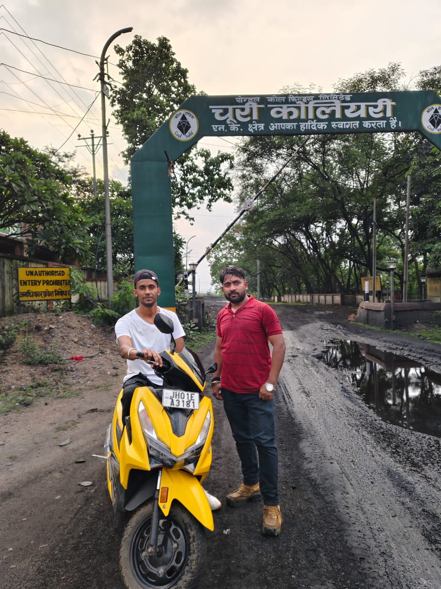
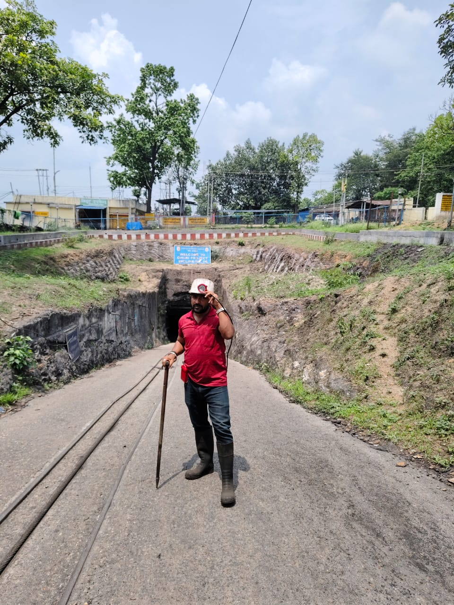
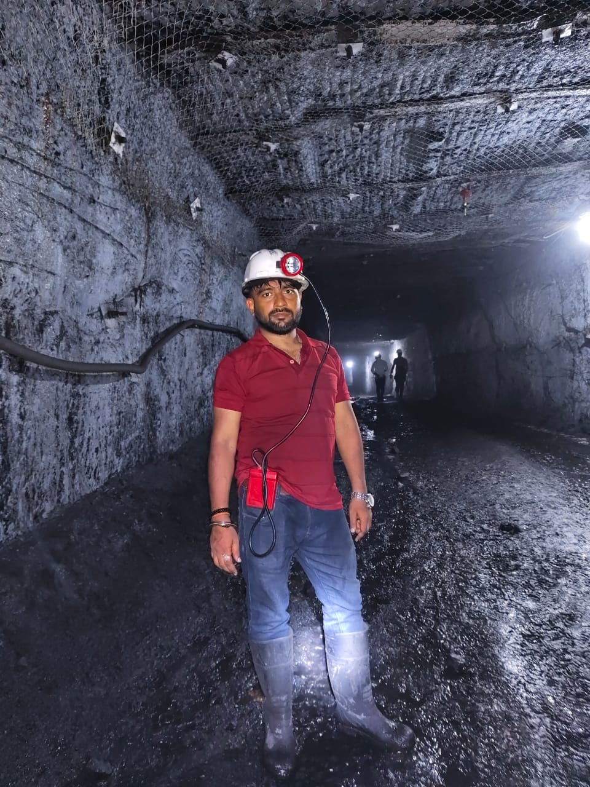
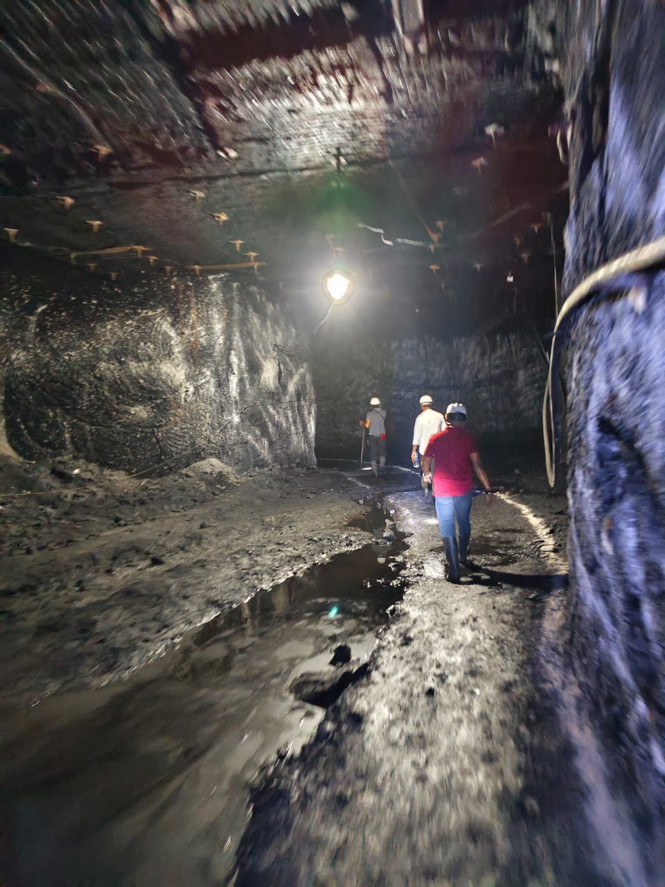

Jharia Coalfields & Churi Mines Field Visit
Academic observation from safe permitted distance only. No restricted entry, no CCL letter number, no official endorsement. Personal photos as academic proof for rover design relevance.
Opencast - Jharia
Overburden dump, undulation +-120mm, dust, zero network at bottom, 2m subsidence bowl, CO 25-30ppm background. Validated need for 150mm GC and 500m mesh.
Underground - Churi
Darkness <10 lux, humidity >85%, CO/CH4, roof fall risk, no signal, rodents causing PIR false alarms. Validated Triple-AI till 5 lux + offline SD logging.
GALLERY - Upload Your 4-5 Images Here

1. Jharia Opencast View
Dump and undulation - need 150mm GC

2. Churi Mine Area
Zero network at bottom - mesh required

3. Subsidence Depression
~2m bowl - BMP280 pressure drop design

4. Underground Conditions
Darkness <10 lux - CLAHE enhancement

5. Team at Safe Distance
Academic observation - no restricted entry
Engineering Inference
→ 150mm GC for undulation | → IP65 for humidity/dust | → Offline mesh 500m | → Triple-AI PIR+YOLOv8>0.75+CO>50ppm for rodent false alarm cut 70% | → CLAHE till 5 lux | → Atma-Raksha auto-return CO>100ppm